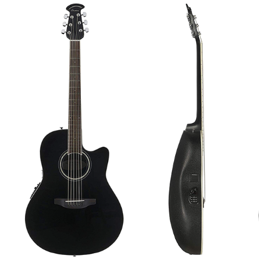
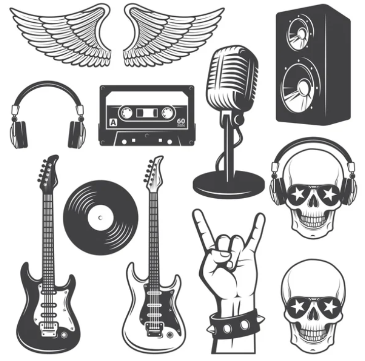
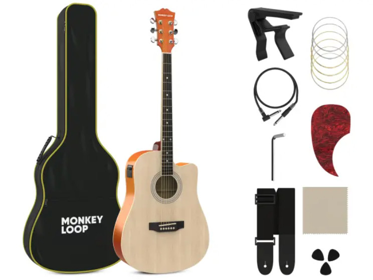

BANDEJA DE SONIDOS
Como en una guitarra, cada sonido tiene su tono y su intención. Explorá estos audios y descubrí cómo diferentes matices pueden transmitir sensaciones únicas.

Sonido 1

Sonido 2
Sonido 3

Sonido 4